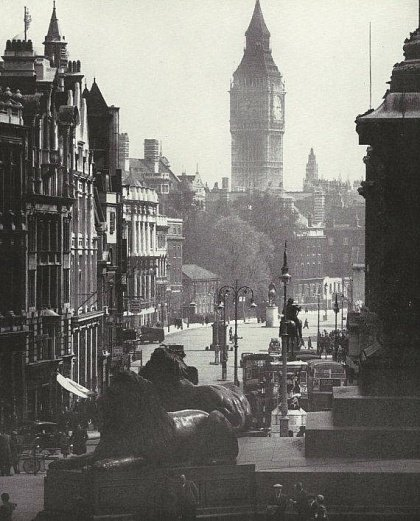

Йоркский замок – прекрасный замок в городе Йорк графства Северный Йоркшир. Замок относится к типу «мотт-и-бейли», представляющего собой цитадель на холме, обнесенную частоколом. Первый замок на этом месте был построен в 1068 году, после прихода норманнов. Постройки были деревянными, сложенными на скорую руку. Некоторые источники утверждают, что первый замок был построен за восемь дней. Генрих II четырежды посещал этот замок, именно здесь он принимал присягу Вильгельма Льва Шотландского. В середине XIII столетия по указу Генриха III замок перестраивается в камне. В это время была построена необычная цитадель в форме четырехлистника. В годы шотландских войн за независимость Йоркский замок был оплотом королевской власти в северной части Англии. В XV-XVI вв. замком утеряно былое военное значение. Он используется, в основном, в качестве тюрьмы. Здесь содержались как простые местные разбойники и мелкие воришки, так и политические узники. В 1642 году начинается гражданская война, Йоркский замок в связи с этим восстанавливается и укрепляется. Город занимают войска, верные Карлу I, под командованием Генри Клиффорда. В 1644 году город осажден парламентскими войсками, замок и город стойко держались в течение нескольких месяцев, несмотря на то, что количество осажденных составляло около 30 000 человек. Летом город сдался. По завершении войны и после периода Реставрации долго шли дебаты, стоит ли восстанавливать замок. Башня замка в течение этого времени использовалась как склад пороха. В 1684 году произошел сильнейший взрыв, как утверждают некоторые источники, преднамеренный. В результате башня замка была полностью разрушена, а покрытые известняком стены замка под воздействием высокой температуры приобрели сегодняшний розовый оттенок. Тюрьма в Йоркском замке действовала вплоть до 1900 года. Когда все заключенные были переведены в тюрьму Вейкфилда, однако до 1929 года в Йоркской тюрьме содержались военные преступники. Сегодня замок в Йорке охраняется государством как исторический и архитектурный памятник, здесь работает музей, повествующий об истории замка и города.
По своим параметрам Башня Святого Стефана (это второе название достопримечательности) уступает «старшей сестре» – 98-метровой Башне Виктории, которая находится в юго-западной части дворца. Ее высота вместе со шпилем составляет 96,3 метра. Первый 61 метр башни выложен из кирпича, а наружная облицовка (сайдинг) – из эстонского известняка, применяемого в строительстве на протяжении 700 лет. Остальные 35,3 метра – это отлитый из чугуна шпиль. Основу башни составляет бетонный фундамент, его глубина 4 м. Разгадка популярности Биг-Бена не только в особенностях башни как таковой. Она знаменита, прежде всего, своими легендарными часами, которые располагаются на 55-метровой высоте от поверхности земли. Диаметр заключенных в стальные рамки циферблатов огромен: 7 метров. Длина стрелок – часовая 2,7 м, минутная 4,2 метра – тоже впечатляет. Долгое время этот хронометр являлся самым большим в мире. Когда в 1962 году в г. Милуоки (штат Висконсин, США) была введена в эксплуатацию часовая башня Аллен-Брэдли, лондонской знаменитости пришлось уступить пальму первенства.

В 1642 году разразилась гражданская война, и Йоркский замок пришлось восстановить и укрепить. Войска под командованием Генри Клиффорда, верные Карлу I, заняли замок и город, а 23 апреля 1644 года парламентские войска осадили Йорк. Город и крепость под командованием Вильяма Кавендиша и сэра Франсиса Кобба стойко держались несколько месяцев, несмотря на то, что число осаждающих доходило до 30 000 человек. 14 июля замок и город все-таки сдались, но войскам роялистов было разрешено покинуть Йорк со всеми почестями. После окончания войны и Реставрации шли долгие дебаты, надо ли восстанавливать или сносить замок, а башня тем временем использовалась как пороховой склад. В 1684 году прогремел взрыв (есть подозрения, что неслучайный), который полностью разрушил башню, а из-за высокой температуры во время взрыва известняковые стены приобрели свой теперешний розоватый цвет. Тюрьма просуществовала в Йоркском замке до 1900 года, когда заключенных перевели в тюрьму Вейкфилда, но до 1929 года здесь содержались только военные преступники.
Сейчас Йоркский замок охраняется как памятник истории и архитектуры, здесь открыт замковый музей.